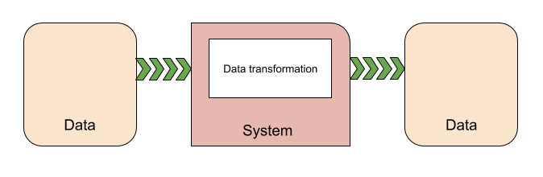

Systems
A System, the S in ECS, provides the logic that transforms the component data from its current state to its next state — for example, a system might update the positions of all moving entities by their velocity multiplied by the time interval since the previous update.

Instantiating systems
Unity ECS automatically discovers system classes in your project and instantiates them at runtime. It adds each discovered system to one of the default system groups. You can use system attributes to specify the parent group of a system and the order of that system within the group . If you do not specify a parent, Unity adds the system to the Simulation system group of the default world in a deterministic, but unspecified, order. You can also use an attribute to disable automatic creation.
A system's update loop is driven by its parent ComponentSystemGroup. A ComponentSystemGroup is, itself, a specialized kind of system that is responsible for updating its child systems. Groups can be nested. Systems derive their time data from the World they are running in; time is updated by the UpdateWorldTimeSystem.
You can view the system configuration using the Entity Debugger window (menu: Window > Analysis > Entity Debugger).
System types
Unity ECS provides several types of systems. In general, the systems you write to implement your game behaviour and data transformations will extend SystemBase. The other system classes have specialized purposes. You typically use existing instances of the EntityCommandBufferSystem and ComponentSystemGroup classes.
- SystemBase -- the base class to implement when creating systems.
- EntityCommandBufferSystem -- provides EntityCommandBuffer instances for other systems. Each of the default system groups maintains an Entity Command Buffer System at the beginning and end of its list of child systems. This allows you to group structural changes so that they incur fewer syncronization points in a frame.
- ComponentSystemGroup -- provides nested organization and update order for other systems. Unity ECS creates several Component System Groups by default.
- [GameObjectConversionSystem] -- converts GameObject-based, in-Editor representations of your game to efficient, entity-based, runtime representations. Game conversion systems run in the Unity Editor.
Note that the ComponentSystem and JobComponentSystem classes, along with IJobForEach, are being phased out of the DOTS API, but have not been officially deprecated yet. Use SystemBase and Entities.ForEach instead.